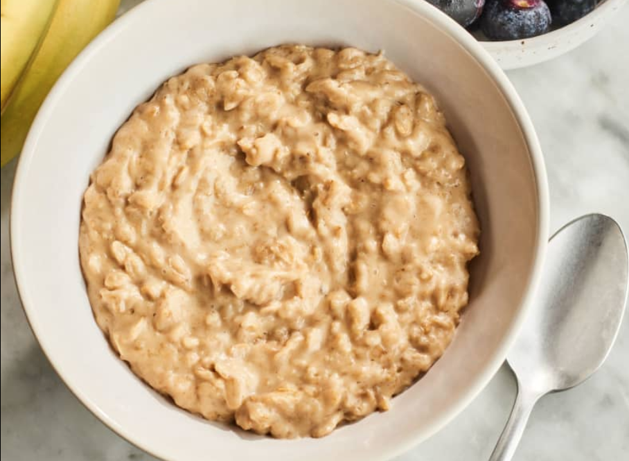

Sweet Oatmeal

Ingredients
- 3/4 cup of dry oats
- 1 cup of milk of choice(can also use water)
- 1 banana
- 1 red apple
- 1 heaping tablespoon of peanut butter
- himalayan pink salt
Cookware
- Pot and Pot Lid
- Measuring Cup
- Wood Mixing Spoon
- Cutting Board
- Knife
- Spoon
Instructions
- Lay out all your ingredients and cookware
- Cut up your banana and apple
- Measure out your dry oats and milk and put them in the pot
- Turn the stove on to medium heat and occasionally stir
- After 2-3 minutes, add in your cut fruit, peanut butter, and himalayan pink salt
- Cook for 2-3 more minutes with occasional stirring, then turn off and serve :)